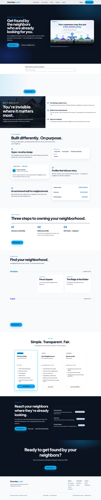
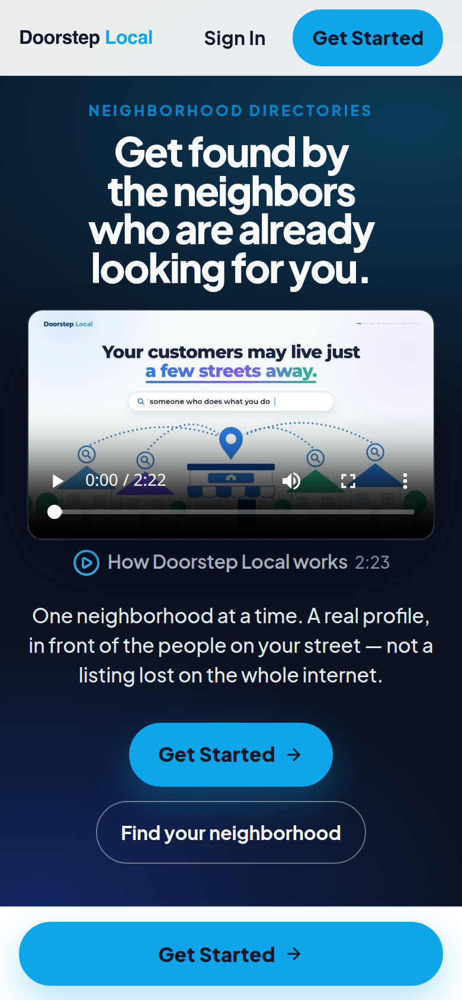
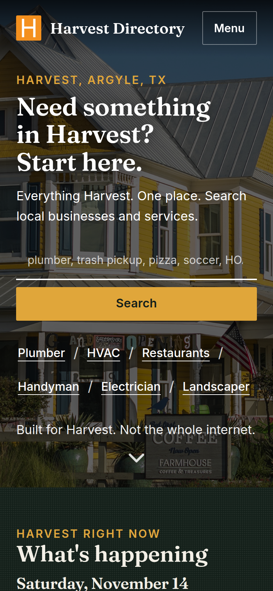
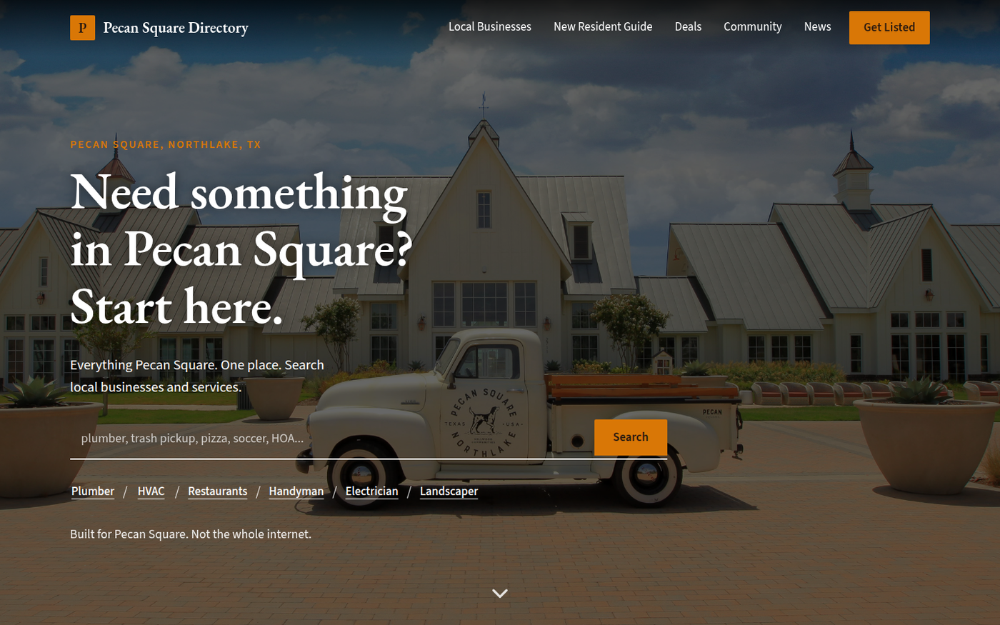
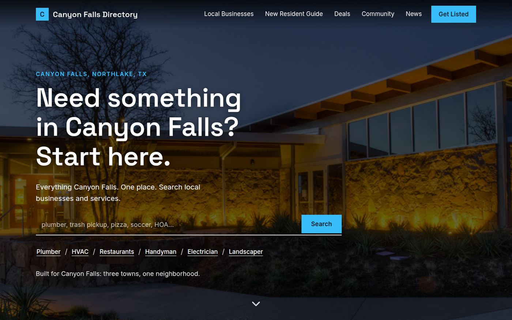
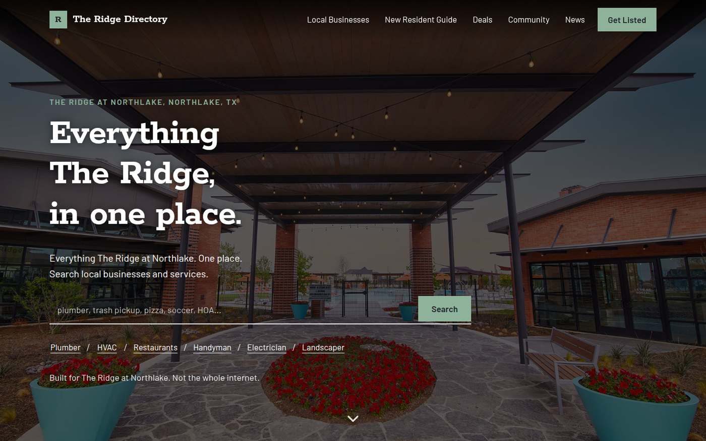
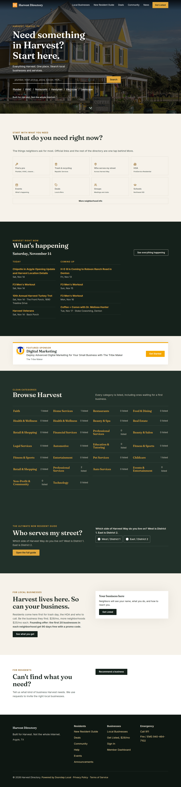

Found on
your street.
A neighborhood-directory platform: one real business profile, in front of the people on that street. Harvest Directory is the live homeowner hub. Pecan Square, Canyon Falls, and The Ridge run beside it.

One neighborhood at a time — not a listing lost on the whole internet.
Doorstep Local is the platform. A business keeps photos, hours, and a real about section. Neighbors search the directory for the place they already live. The homepage says it plainly: get found by the neighbors who are already looking.
A wordmark split between slate and sky.
Doorstep is set in slate. Local is set in sky. Plus Jakarta Sans carries the platform headlines. Each community directory then takes its own type and color — Harvest in Fraunces and gold, Pecan Square in Garamond and amber, Canyon Falls in Space Grotesk and blue, The Ridge in Rokkitt and sage.


The platform sells the idea. Harvest is where a neighbor searches.
harvestdirectory.com is Harvest, Argyle and Northlake: search, trades, HOA, events, and deals in one place. The same Doorstep system also runs Pecan Square, Canyon Falls, and The Ridge, each with its own front door.
Three more front doors, same system.
Harvest is the long scroll below. These three are the sister communities on the same platform: a search, a trade list, and a sentence that says the directory was built for that neighborhood, not the whole internet.



One neighborhood at a time. A real profile, in front of the people on that street.
The local homeowner hub, start to scroll.
harvestdirectory.com — Harvest, Argyle, Texas. Search the street, then the trades, the HOA, the deals, and what is happening this week. Built for Harvest. Not the whole internet.

doorsteplocal.com — neighborhood directories for DFW, with Harvest Directory as the live homeowner hub.
- Design DirectionStudio
- Product & PlatformStudio
- Web DesignStudio
- Community sitesHarvest + 3 sisters